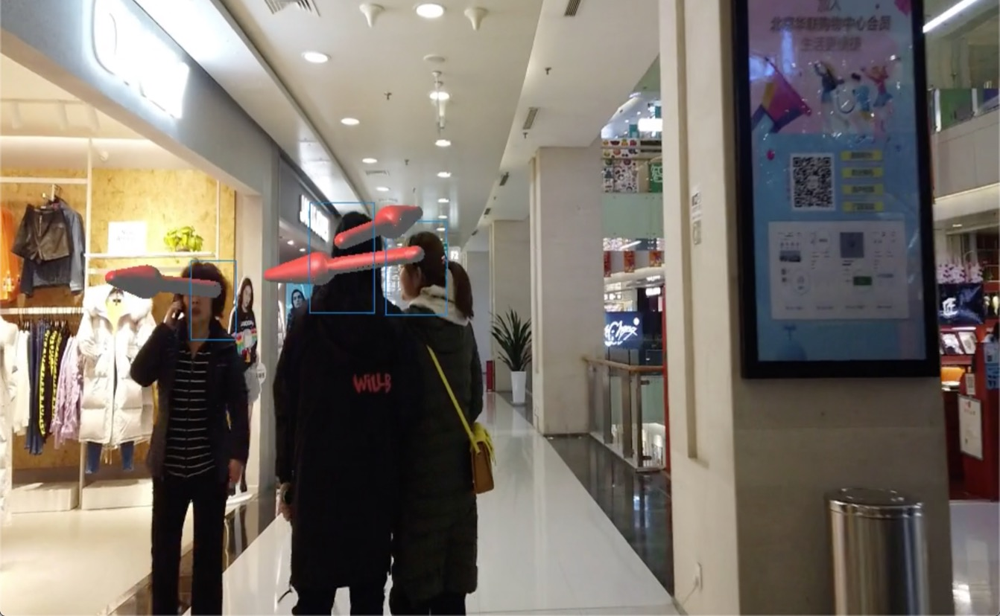
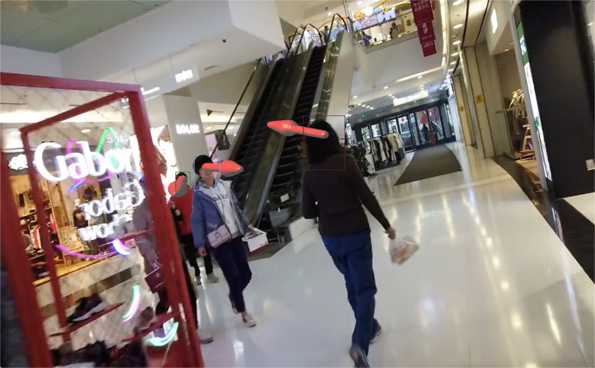
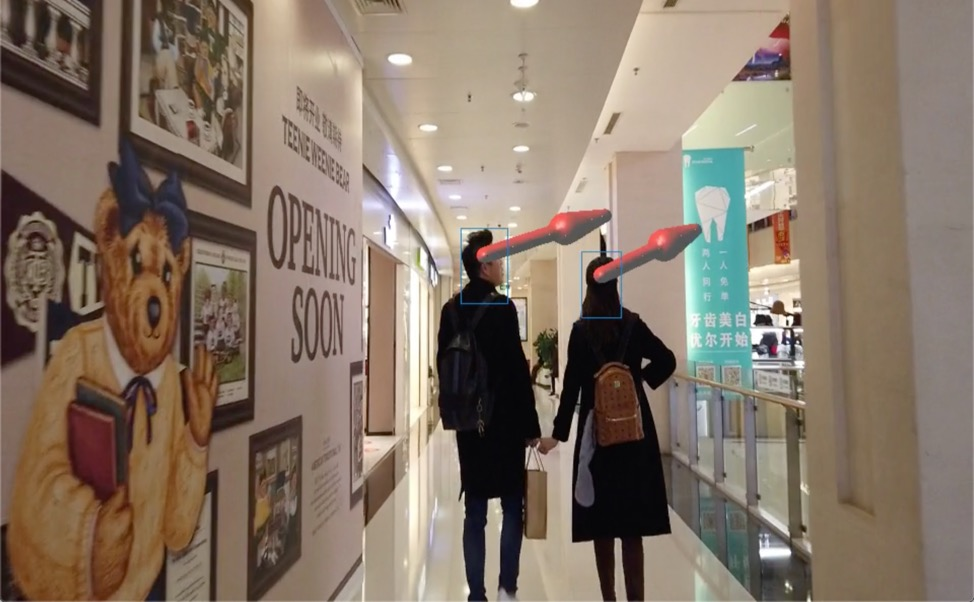
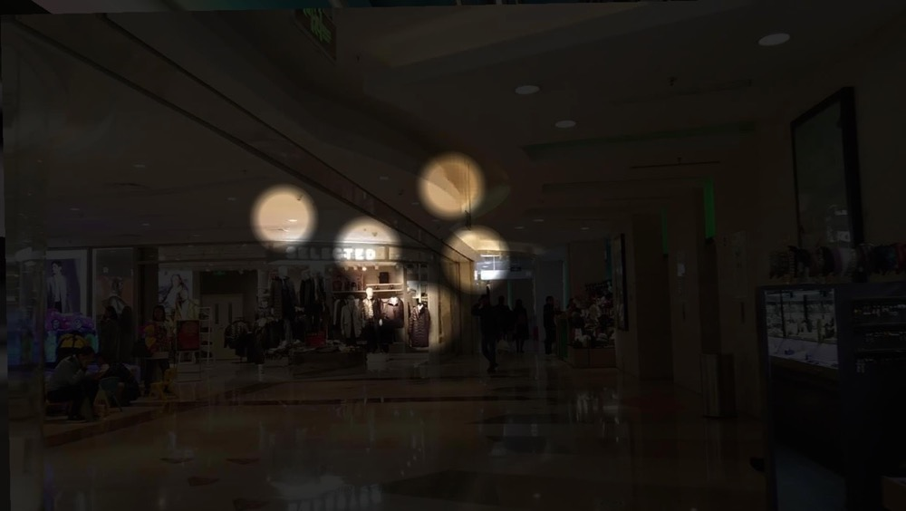
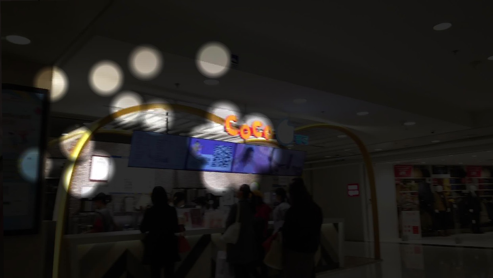

Trace
2019-11
Background
This project aims at analyzing the crowd’s visual attention on their walking environments. I choose several malls and stations to collect data and then do some experiments. I used DJI OSMO Pocket to collect video data by walking around the mall, afterwards, I used Computer Vision method to find out what are people looking at when they are wandering.
Pipeline
I reconstructed camera pose and 3D scenes from video by Structure from Motion method; Then I used a CNN model to estimate pedestrian’s location and their gaze from images; I projected the pedestrian’s location and gaze vector on the map to find out the intersection of gaze vector and surrounding features, so that we can find out what they are looking at.
For gaze estimation, I used the Gaze360 model proposed by MIT CSAIL, I re-train the model by data augmentation so that it transfer to mall or station scene.

For pedestrian localization, I tried some pose estimation models (OpenPose, DensePose), but they can not fit in well with the moving condition. So I matched the gaze vectors with their frame, and localized them in to the 3D reconstruction map by estimated camera pose.

What’s Next
I’m still working on more precise location estimation, a better solution is using multiple survilience cameras, if so, the location of pedestrian can be estimated more precisely.
Although I’m using an on-the-fly algorithm which extract only the location and gaze vector from the orignal video, privacy issues still should be taken seriously, since the facial images may be abused.